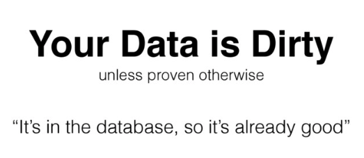
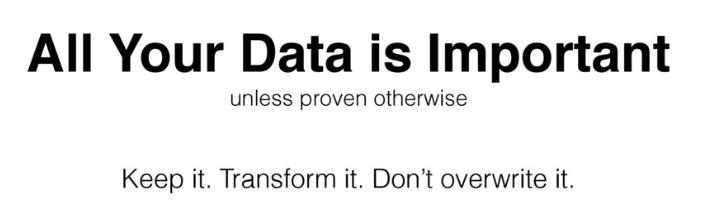

Pipelines¶

Automation helps us speed those manual boring tasks. The ability to automate means you can spend time working on other more thought-intensive projects.
Automation adds monitoring and logging tasks:
| ✅ Easy to automate | ❌ Difficult to automate | | ————————————– | ——————————– | | Regularly scheduled reports | One-off or non-scheduled tasks | | Clear success/failure outcomes | Unclear success/failure outcomes | | Input that can be handled via machines | Requires deeper human input |
Steps to automation¶
Whenever you consider automating a task ask the following questions:
When should this task begin?
Does this task have a time limit?
What are the inputs for this task?
What is success or failure within this task? (How can we clearly identify the outcomes?)
If the task fails what should happen?
What does the task provide or produce? In what way? To whom?
What (if anything) should happen after the task concludes?
Top tip
If your project is too large or loosely defined, try breaking it up into smaller tasks and automate a few of those tasks. Perhaps your task involves a report which downloads two datasets, runs cleanup and analysis, and then sends the results to different groups depending on the outcome. You can break this task into subtasks, automating each step. If any of these subtasks fail, stop the chain and alert the whoever is responsible for maintaining the script so it can be investigated further.What is a data pipeline?¶
Roughly this is how all pipelines look like:

they consist mainly of three distinct parts: data engineering processes, data preparation, and analytics. The upstream steps and quality of data determine in great measure the performance and quality of the subsequent steps.
Why do pipelines matter?¶
Analytics and batch processing is mission-critical as they power all data-intensive applications
The complexity of the data sources and demands increase every day
A lot of time is invested in writing, monitoring jobs, and troubleshooting issues.
This makes data engineering one of the most critical foundations of the whole analytics cycle.
Good data pipelines are:¶
Reproducible: same code, same data, same environment -> same outcome
Easy to productise: need minimal modifications from R&D to production
Atomic: broken into smaller well-defined tasks
When working with data pipelines always remember these two statements:


As your data engineering and data quality demands increase so does the complexity of the processes. So more often than not you will eventually need a workflow manager to help you with the orchestration of such processes.
GNU Make + Unix pipes + Steroids
⭐️ Creating your first ETL pipeline in Python¶
Setting your local database¶
Let’s us access your local MySQL from the command line, type the following on the command line:
MySQL -u root -p
followed by your MySQL password (this was done as part of your setup)
you should see the following message as well as a change in your prompt:
Welcome to the MySQL monitor. Commands end with; or \g.
Your MySQL connection id is 276
Server version: 8.0.15 Homebrew
Copyright (c) 2000, 2019, Oracle and/or its affiliates. All rights reserved.
Oracle is a registered trademark of Oracle Corporation and/or its
affiliates. Other names may be trademarks of their respective
owners.
Type 'help;' or '\h' for help. Type '\c' to clear the current input statement.
mysql>
To see the existing databases you can use the following command:
SHOW DATABASES
you can also see the users and the relevant hosts using the following command
SELECT user, host FROM mysql.user;
We will need to create a new database for the following sections. So let’s start by creating a new database called airflowdb:
CREATE DATABASE airflowdb CHARACTER SET utf8 COLLATE utf8_unicode_ci;
as well as creating a corresponding user:
CREATE USER 'airflow'@'localhost' IDENTIFIED BY 'password';
make sure to substitute password with an actual password.
For this tutorial let’s assume the password is python2019.
Now we need to make sure that the airflow user has access to the databases:
GRANT ALL PRIVILEGES ON *.* TO 'airflow'@'localhost';
FLUSH PRIVILEGES;
If you want to restrict the access of this user to the airflowdb database, for example, you can do it via:
GRANT ALL PRIVILEGES ON airflowdb.* To 'airflow'@'localhost';
FLUSH PRIVILEGES;
so now the output of SELECT user, host FROM mysql.user; should look like this:
mysql> select user, host FROM mysql.user;
+------------------+-----------+
| user | host |
+------------------+-----------+
| airflow | localhost |
| mysql.infoschema | localhost |
| mysql.session | localhost |
| mysql.sys | localhost |
| root | localhost |
+------------------+-----------+
5 rows in set (0.00 sec)
if you need to remove a user you can use the following command:
DROP USER '<username>'@'localhost' ;
🚦Checking connection to the database from Python¶
The following snippet will allow you to connect to the created database from Python:
Note that you need the database name, password, and user for this.
# Script to check the connection to the database we created earlier airflowdb
# importing the connector from mysqlclient
import mysql.connector as mysql
# connecting to the database using the connect() method
# it takes 3 parameters: user, host, and password
dbconnect = mysql.connect(host="localhost",
user="airflow",
password="python2019",
db="airflowdb")
# print the connection object
print(dbconnect)
# do not forget to close the connection
dbconnect.close()
dbconnect is a connection object which can be used to execute queries, commit transactions and rollback transactions before closing the connection. We will use it later.
The dbconnect.close() method is used to close the connection to database. To perform further transactions, we need to create a new connection.
Streaming Twitter data into the database¶
We are going to create a Python script that helps us to achieve the following:
Create a class to connect to the Twitter API
Connect our database and reads the data into the correct columns
We will be using the Tweepy library for this (docs here https://tweepy.readthedocs.io/en/latest/) .
Let’s start with an example to collect some Tweets from your public timeline (for details on the Tweet object visit the API docs)
🚦 The first step will be to create a config file (config.cfg) with your Twitter API tokens.
[twitter]
consumer_key = xxxxxxxxxxxxxxxxxx
consumer_secret = xxxxxxxxxxxxxxxxxx
access_token = xxxxxxxxxxxxxxxxxx
access_token_secret = xxxxxxxxxxxxxxxxxx
Now to the coding bits:
# Import libraries needed
from configparser import ConfigParser
from pathlib import Path
import tweepy
# Path to the config file with the keys make sure not to commit this file
CONFIG_FILE = Path.cwd() / "config.cfg"
config = ConfigParser()
config.read(CONFIG_FILE)
# Authenticate to Twitter
auth = tweepy.OAuthHandler(
config.get("twitter", "consumer_key"), config.get("twitter", "consumer_secret")
)
auth.set_access_token(
config.get("twitter", "access_token"), config.get("twitter", "access_token_secret")
)
# Create Twitter API object
twitter = tweepy.API(auth)
# let's collect some of the tweets in your public timeline
public_tweets = twitter.home_timeline()
for tweet in public_tweets:
print(tweet.text)
🚦 Create a new table¶
Let us create a folder called etl-basic and a stream_twitter.py script in it.
We are going to create a SQL table to save the tweets to. This table will contain the following:
username
tweet content
time of creation
retweet count
unique tweet id
This corresponds to 5 columns and the primary key.
We already know how to connect to a database:
from mysql import connector as mysql
# Details for our MySql connection
DATABASE = {
"host": "localhost",
"user": "airflow",
"password": "python2019",
"db": "airflowdb",
}
# ----------------------------------------------
# Database related functions
# ----------------------------------------------
def connect_db(my_database):
"""Connect to a given my_database
Args:
my_database(dict): dictionary with the my_database details
Returns:
dbconnect: MySql my_database connection object
"""
try:
dbconnect = mysql.connect(
host=my_database.get("host"),
user=my_database.get("user"),
password=my_database.get("password"),
db=my_database.get("db"),
)
print("connected")
return dbconnect
except mysql.Error as e:
print(e)
Now we need to write a function to create the table
def create_table(my_database, new_table):
"""Create new table in a my_database
Args:
my_database (dict): details for the db
new_table (str): name of the table to create
"""
dbconnect = connect_db(my_database)
# create a cursor for the queries
cursor = dbconnect.cursor()
cursor.execute("USE airflowdb")
# here we delete the table, it can be kept or else
cursor.execute(f"DROP TABLE IF EXISTS {new_table}")
# these matches the Twitter data
query = (
f"CREATE TABLE `{new_table}` ("
" `id` INT(11) NOT NULL AUTO_INCREMENT,"
" `user` varchar(100) NOT NULL ,"
" `created_at` timestamp,"
" `tweet` varchar(255) NOT NULL,"
" `retweet_count` int(11) ,"
" `id_str` varchar(100),"
" PRIMARY KEY (`id`))"
)
cursor.execute(query)
dbconnect.close()
cursor.close()
return print(f"Created {new_table} table")
🚦 Collect Tweets¶
The Twitter Streaming API has rate limits and prohibits too many connection attempts happening too quickly. It also prevents too many connections being made to it using the same authorization keys. Thankfully, tweepy takes care of these details for us, and we can focus on our program.
The main thing that we have to be aware of is the queue of tweets that we’re processing. If we take too long to process tweets, they will start to get queued, and Twitter may disconnect us. This means that processing each tweet needs to be extremely fast.
Let’s us transform the connection script we created before:
# Import libraries needed
import json
import time
from configparser import ConfigParser
from pathlib import Path
import tweepy
from dateutil import parser
from mysql import connector as mysql
# Path to the config file with the keys make sure not to commit this file
CONFIG_FILE = Path.cwd() / "config.cfg"
def connectTwitter():
config = ConfigParser()
config.read(CONFIG_FILE)
# complete the part to Authenticate to Twitter
# Create Twitter API object
twitter = tweepy.API(auth, wait_on_rate_limit=True, wait_on_rate_limit_notify=True)
print(f"🦄 Connected as {twitter.me().screen_name}")
return twitter
The next step is to create a stream listener.
The StreamListener class has a method called on_data. This method will automatically figure out what kind of data Twitter sent, and call an appropriate method to deal with the specific data type. It’s possible to deal with events like users sending direct messages, tweets being deleted, and more.
class customListener(tweepy.StreamListener):
"""We need to create an instance of the Stream Listener
http://docs.tweepy.org/en/v3.4.0/streaming_how_to.html
"""
def on_error(self, status_code):
if status_code == 420:
# returning False in on_data disconnects the stream
return False
def on_status(self, status):
print(status.text)
return True
def on_data(self, data):
"""
Automatic detection of the kind of data collected from Twitter
This method reads in tweet data as JSON and extracts the data we want.
"""
try:
# parse as json
raw_data = json.loads(data)
# extract the relevant data
if "text" in raw_data:
user = raw_data["user"]["screen_name"]
created_at = parser.parse(raw_data["created_at"])
tweet = raw_data["text"]
retweet_count = raw_data["retweet_count"]
id_str = raw_data["id_str"]
# insert data just collected into MySQL my_database
populate_table(user, created_at, tweet, retweet_count, id_str)
print(f"Tweet colleted at: {created_at}")
except Error as e:
print(e)
🚦 In pairs discuss how you would create the populate_table function
def populate_table(
user, created_at, tweet, retweet_count, id_str, my_database=DATABASE
):
"""Populate a given table witht he Twitter collected data
Args:
user (str): username from the status
created_at (datetime): when the tweet was created
tweet (str): text
retweet_count (int): number of retweets
id_str (int): unique id for the tweet
"""
dbconnect = connect_db(DATABASE)
cursor = dbconnect.cursor()
cursor.execute("USE airflowdb")
# add content here
try:
# what is missing?
commit()
print("commited")
except mysql.Error as e:
print(e)
dbconnect.rollback()
cursor.close()
dbconnect.close()
return
🚦 For this to be called we need to wrap around a main function:
# complete the main function
if __name__ == "__main__":
create_table(DATABASE, "tweets")
# first we need to authenticate
twitter = connectTwitter()
# next: create stream listener
myStreamListener = customListener()
myStream = tweepy.Stream(auth=twitter.auth, listener=myStreamListener, timeout=30)
# stream tweets using the filter method
start_stream(myStream, track=["python", "pycon", "jupyter", "#pycon2019"], async=True)
📝 Solutions at: https://github.com/trallard/airflow-tutorial/solutions
Extending your data pipeline¶
🚀 So far we have collected some data through streaming (enough to collect some data). And created a database where this data is going to be deposited into.
The next step is to transform the data and prepare it for more downstream processes.
There are different mechanisms to share data between pipeline steps:
files
databases
queues
In each case, we need a way to get data from the current step to the next step.
🚦 The next step would be to add some ‘transformation’ steps to the data set.
Modify your stream_twitter.py so that the table contains also: language, follower count and country.
Now let’s create a script called analyse_twitter.py
This script will do the following:
Load the table into a pandas dataframe
Clean the data: lowercase usernames, remove RT
Create a plot from the data
Save the plot and a csv with the clean data
import os
import os.path
import re
from datetime import datetime
from pathlib import Path
import matplotlib.pyplot as plt
import mysql.connector as mysql
import pandas as pd
# import the previously created functions
from stream_twitter import connect_db
# Details for our MySql connection
DATABASE = {
"host": "localhost",
"user": "airflow",
"password": "python2019",
"db": "airflowdb",
}
# ----------------------------------------------
# Database related functions
# ----------------------------------------------
def sql_to_csv(my_database, my_table):
dbconnect = connect_db(my_database)
cursor = dbconnect.cursor()
query = f"SELECT * FROM {table}"
all_tweets = pd.read_sql_query(query, dbconnect)
if os.path.exists("./data"):
all_tweets.to_csv("./data/raw_tweets.csv", index=False)
else:
os.mkdir("./data")
all_tweets.to_csv("./data/raw_tweets.csv", index=False)
def sql_to_df(my_database, my_table):
dbconnect = connect_db(my_database)
cursor = dbconnect.cursor()
query = f"SELECT * FROM {my_table}"
# store in data frame
df = pd.read_sql_query(query, dbconnect, index_col="id")
cursor.close()
dbconnect.close()
return df
# ----------------------------------------------
# Data processing
# ----------------------------------------------
def clean_data(df):
# Make all usernames lowercase
clean_df = df.copy()
clean_df["user"] = df["user"].str.lower()
# keep only non RT
clean_df = clean_df[~clean_df["tweet"].str.contains("RT")]
return clean_df
def create_plots(df):
x = df["language"].unique()
fig, ax = plt.subplots()
countries = df["language"].value_counts()
plt.bar(range(len(countries)), countries)
fig.suptitle("Language counts")
plt.xlabel("languages")
plt.ylabel("count")
ax.set_xticklabels(x)
if os.path.exists("./plots"):
fig.savefig("./plots/barchart_lang.png")
else:
os.mkdir("./plots")
fig.savefig("./plots/barchart_lang.png")
def save_df(df):
today = datetime.today().strftime("%Y-%m-%d")
if os.path.exists("./data"):
df.to_csv(f"./data/{today}-clean-df.csv", index=None)
else:
os.mkdir("./data")
df.to_csv(f"./data/{today}-clean-df.csv", index=None)
if __name__ == "__main__":
df = sql_to_df(DATABASE, "tweets_long")
print("Database loaded in df")
clean_df = clean_data(df)
create_plots(clean_df)
save_df(clean_df)
🚦In pairs discuss:
How would you run the two scripts together?
Try and create the pipeline:
stream_twitter.py->analyse_twitter.py